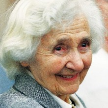
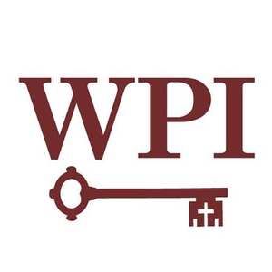

Likoudis Legacy
Foundation
Advancing Ecumenical Scholarship & Christian Unity
In Illo Uno Unum — In the One, we are one.
Advancing Ecumenical Scholarship & Christian Unity
In Illo Uno Unum — In the One, we are one.
The Likoudis Legacy Foundation is a research institute dedicated to the reunion of the Catholic and Eastern Orthodox Churches — and, from that center, to deeper dialogue among the Abrahamic faiths and to the renewal of Catholic life through fidelity to the Church's own teaching. We publish, convene, and form: through journals, conferences, reading programs, and direct service to dioceses and the wider Church.
This work begins in the intellectual legacy of James Likoudis — theologian, apologist, and lay Catholic who gave more than seventy years to the cause of Christian reunion. It continues in the conviction that the via media of faithful Catholic witness resists partisan capture from left and right, because the fullness of the Church's teaching belongs to no faction.
I.
From the Church's center outward — inter-Catholic unity as the precondition for credible Christian reunion, and Christian reunion as the precondition for genuine interreligious dialogue. Catholic-Orthodox relations are our primary focus, extending to the wider interreligious horizon Vatican II opened.
II.
The Church has spoken clearly on the death penalty, immigration, labor, and the dignity of every person — and on the irreducible right of religious liberty. The Foundation supports the formation needed to receive that teaching in full, without partisan filtering from left or right.
III.
Serving both pew and chancery: lay formation through our reading programs, publications, and initiatives; and direct support to dioceses through canonical resources, consulting, and conference programming.
 In Memory of James Likoudis
In the Press
In Memory of James Likoudis
In the Press
A scholarly tribute published in the peer-reviewed journal of the Society of Catholic Social Scientists, recognizing Likoudis's decades of apologetic, ecumenical, and catechetical work and his witness to the integrity of Catholic doctrine.
Read in CSSR Vol. 30 (2025) →Andrew Likoudis's one-year tribute — written on the anniversary of his grandfather's passing.
Read the anniversary tribute →Cardinals, bishops, and scholars on the life and work of James Likoudis — the corpus the Foundation exists to steward.
“His work as the author of numerous books and articles significantly contributed to clarifying and enhancing the relations between the Roman Catholic Church and the Eastern Orthodox Churches… In short, he is regarded as a true Christian scholar.”
“James Likoudis was a courageous defender of the faith and a gentle ‘man of the Church.’ It is praiseworthy that this new Foundation has been established in his honor.”
“…several thinkers I admire and respect. Let me mention, among others… James Likoudis.”

“I knew James Likoudis for half of my life and a third of his… I’ve known few people who had such a passion for the apostolate and for Christian unity.”
 New York Times
New York Times Nat'l Catholic Register
Nat'l Catholic Register
Where Peter Is Catholic Answers
Catholic Answers Catholic Culture
Catholic Culture Patheos
Patheos Catholic Exchange
Catholic Exchange Aleteia
Aleteia Crisis Magazine
Crisis Magazine New Oxford Review
New Oxford Review Catholic World News
Catholic World News The Wanderer
The Wanderer Pints with Aquinas
Pints with Aquinas Tradition & Sanity
Tradition & SanityA journal of Catholic theology, ecumenism, and patristics — named for the Byzantine philosopher Demetrios Kydones.
JournalA digital commons for Catholic scholarship, dialogue, and community — connecting the faithful across traditions.
Digital PlatformA Foundation initiative addressing the purpose crisis among young adults — integrating faith, meaning, and vocation.
InitiativeA Substack publication offering daily roundups, analysis, and commentary on the Church's living tradition and reform.
PublicationScholarship, events, and fellows updates — delivered one to two times per month. No noise, no filler.
Enter your email to subscribe
No spam. Unsubscribe anytime.

Mary,
Mother of God

St. Joseph

St. Leopold
Mandić

St. Thérèse
of Lisieux

St. John Henry
Newman

Sts. Cyril &
Methodius

St. Thomas
Aquinas

St. Teresa Benedicta
of the Cross